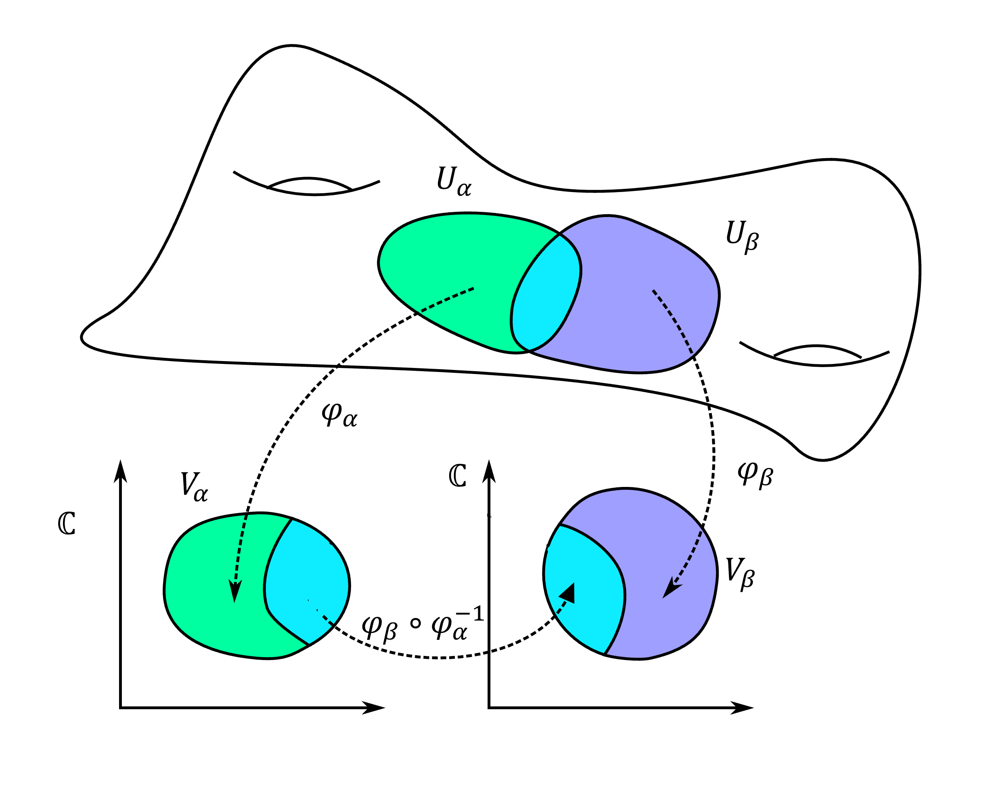

Chapter 5 Riemann Surfaces.
Definition 5.1 (Riemann surface) A Riemann surface is a second‑countable, Hausdorff topological space \(X\) equipped with a complex atlas \(\mathcal{A} = \{(U_\alpha, \varphi_\alpha)\}\) satisfying the following properties:
Each \(U_\alpha \subseteq X\) is open.
Each map \(\varphi_\alpha : U_\alpha \to V_\alpha\) is a homeomorphism onto an open set \(V_\alpha \subseteq \mathbb{C}\).
The collection \(\{U_\alpha\}\) covers \(X\).
For every pair of charts \((U_\alpha, \varphi_\alpha)\) and \((U_\beta, \varphi_\beta)\) with \(U_\alpha \cap U_\beta \neq \varnothing,\) the transition map \[ \varphi_\beta \circ \varphi_\alpha^{-1} : \varphi_\alpha(U_\alpha \cap U_\beta) \longrightarrow \varphi_\beta(U_\alpha \cap U_\beta) \] is a biholomorphism.

Remark. Terminology: -“holomorphic functions” are functions which are complex differentiable on an open set in the complex plane. -A “biholomorphic map” is a holomorphic bijection whose inverse is holomorphic.
Definition 5.2 Let \(R_1\) and \(R_2\) be Riemann surfaces. A map \(f : R_1 \to R_2\) is said to be holomorphic if for every pair of charts \((U, \varphi) \quad \text{on } R_1, \qquad (V, \psi) \quad \text{on } R_2,\) the map \(\psi \circ f \circ \varphi^{-1}\) is holomorphic on its domain (which may be empty).
Suppose \((U, \varphi)\), \((U', \varphi')\) are charts on \(R_1\), and \((V, \psi)\), \((V', \psi')\) are charts on \(R_2\). On the overlap where all maps are defined, we have:
- the transition maps \(\varphi' \circ \varphi^{-1},\psi' \circ \psi^{-1}\) are biholomorphisms (by condition (5) in the definition of a complex atlas)
- therefore
\[ \psi' \circ f \circ (\varphi')^{-1} = (\psi' \circ \psi^{-1}) \circ (\psi \circ f \circ \varphi^{-1}) \circ (\varphi \circ (\varphi')^{-1}) \] is holomorphic if and only if \(\psi \circ f \circ \varphi^{-1}\) is holomorphic.
Thus the notion of holomorphicity does not depend on the choice of charts. ```

Exercise 5.1 Let \(R_1\) and \(R_2\) be Riemann surfaces, and let \(f : R_1 \to R_2\) be a continuous map. Assume that for every point \(p \in R_1\) there exist:
- a chart \((U_p, \varphi_p)\) on \(R_1\) with \(p \in U_p\),
- a chart \((V_p, \psi_p)\) on \(R_2\) with \(f(p) \in V_p\),
such that \[ \psi_p \circ f \circ \varphi_p^{-1} \] is holomorphic (in the usual sense) on its domain, an open subset of \(\mathbb{C}\).
Show that \(f\) is holomorphic (in the sense of the definition for maps between Riemann surfaces).
Solution:I will update it later.
Example 5.1 Define an equivalence relation on \(\mathbb{C}\) by \(z \sim w \quad \Longleftrightarrow \quad w = z + 2\pi i k \quad \text{for some } k \in \mathbb{Z}.\)Let \(R = \mathbb{C} / \!\sim\) be the quotient topological space, with projection map \(\pi : \mathbb{C} \to R.\) We will define an atlas on \(R\) that makes it a Riemann surface. Define \(U = \{\, z \in \mathbb{C} : -\pi < \operatorname{Im} z < \pi \,\}.\) Restrict to \(U\) for convenience. Let \(W = \pi(U) \subset R.\) Let \(\sigma : W \to U\) be the unique right inverse of \(\pi\) on \(W\), i.e. the unique map satisfying:
- \(\pi \circ \sigma = \mathrm{id}_W\),
- \(\sigma(W) = U\).
Exercise 5.2 Show that for any \(p \in W\) and any \(q \in W\), the map \(\sigma(q) - \sigma(p) : U \longrightarrow \mathbb{C}\) is a translation, and in particular holomorphic.
5.1 The ann sphere
As a set, the Riemann sphere is \(\widehat{\mathbb{C}} = \mathbb{C} \cup \{\infty\}.\) To make this into a Riemann surface, we must specify a topology and an atlas.
A basis for the topology consists of:
Sets of the form \(U \subset \mathbb{C},\) where \(U\) is open in \(\mathbb{C}\) and \(\infty \notin U\).
Sets of the form \(\{\infty\} \cup (\mathbb{C} \setminus K),\) where \(K \subset \mathbb{C}\) is compact.
Equivalently, a set \(V \subset \widehat{\mathbb{C}}\) is open iff:
If \(p \in \mathbb{C}\), then there exists an open set \(U \subset \mathbb{C}\) with \(p \in U \subset V.\)
If \(p = \infty\), then there exists a compact \(K \subset \mathbb{C}\) such that \(\{\infty\} \cup (\mathbb{C} \setminus K) \subset V.\)
Exercise 5.3 Show that \(\widehat{\mathbb{C}}\) is compact.
We define an atlas consisting of two charts:
\[ U_1 = \widehat{\mathbb{C}} \setminus \{\infty\}, \qquad \varphi_1(z) = z. \] \[ U_2 = \widehat{\mathbb{C}} \setminus \{0\}, \qquad \varphi_2(z) = \frac{1}{z}. \]
The first chart and its inverse are clearly continuous.
To see that \(\varphi_2\) is continuous, note that it maps \(U_1 \cap U_2 = \widehat{\mathbb{C}} \setminus \{0,\infty\}\) bijectively onto \(\mathbb{C} \setminus \{0\}\).
The overlap maps are: \[ \varphi_2 \circ \varphi_1^{-1}(z) = \frac{1}{z}, \qquad \varphi_1 \circ \varphi_2^{-1}(w) = \frac{1}{w}. \]
These are biholomorphic, since the inverse of \(z \mapsto 1/z\) is again \(z \mapsto 1/z\).
Thus, this defines a valid atlas, and the resulting Riemann surface is the Riemann sphere.
5.1.1 Stereographic Projection and the Metric
We identify the Riemann sphere with the unit sphere \(S^2 = \{(x_1,x_2,x_3) \in \mathbb{R}^3 : x_1^2 + x_2^2 + x_3^2 = 1\}.\) Think of \(\mathbb{C}\) as the plane \((x_1,y_1,0)\). Given \(z = x + iy \in \mathbb{C}\), draw the line from the north pole \((0,0,1)\) to \((x,y,0)\).This intersects the sphere at:
\[ \begin{align*} x_1 &= \frac{2x}{|z|^2+1} = \frac{2x}{x^2 + y^2 + 1},\\ x_2 &= \frac{2y}{|z|^2+1} = \frac{2y}{x^2 + y^2 + 1},\\ x_3 &= \frac{|z|^2-1}{|z|^2+1} = \frac{x^2 + y^2 - 1}{x^2 + y^2 + 1}. \end{align*} \]

Define \[ \sigma : S^2 \to \widehat{\mathbb{C}} \] by \[ \sigma(x_1,x_2,x_3) = \begin{cases} \dfrac{x_1}{1 - x_3} + i\,\dfrac{x_2}{1 - x_3}, & (x_1,x_2,x_3) \neq (0,0,1), \\[1em] \infty, & (x_1,x_2,x_3) = (0,0,1). \end{cases} \]
\[ \sigma^{-1}(z) = \begin{cases} \left( \dfrac{2\Re z}{|z|^2 + 1}, \dfrac{2\Im z}{|z|^2 + 1}, \dfrac{|z|^2 - 1}{|z|^2 + 1} \right), & z \in \mathbb{C}, \\[1em] (0,0,1), & z = \infty. \end{cases} \]
The spherical (or chordal) metric is: \[ d_{\widehat{\mathbb{C}}}(z,w) = \left\|\sigma^{-1}(z) - \sigma^{-1}(w)\right\| = \frac{2|z-w|}{\sqrt{(1+|z|^2)(1+|w|^2)}}, \] with the natural extension when one point is \(\infty\).